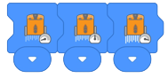
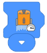
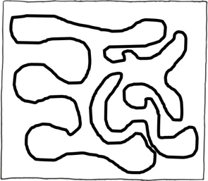

En esta actividad, los estudiantes continúan explorando nuevos bloques dentro de la aplicación EdBlocks, que incluyen "seguir una línea" y control de velocidad.
Esta actividad reintroduce la capacidad de Edison para seguir una línea, usando EdBlocks para crear el programa.
Los motores de accionamiento de Edison se pueden configurar para que funcionen a diferentes velocidades.
Esto permite que los motores giren más rápido o más lento de lo normal, permitiendo diferentes comportamientos
en el robot.
• Hay tres bloques diferentes de "seguir una línea" en EdBlocks.
Para esta actividad, asegúrese de que los estudiantes estén seleccionando el bloque 'seguir una línea'
controlado por tiempo:
• Recuerde a los estudiantes que pueden cambiar la hora haciendo clic en el número y escribiendo el tiempo deseado, desde 0.01 hasta 320. El tiempo es en segundos.
• Hay tres bloques de velocidad en EdBlocks, lento, normal y rápido.
El bloque 'normal' establece los motores de impulsión a la velocidad de impulsión predeterminada
aproximada de Edison.

• Debido a que Edison lee EdBlocks de izquierda a derecha, se debe colocar un bloque de velocidad a la
izquierda de los bloques impulsores.
Un bloque de velocidad afectará a todos los bloques de accionamiento a la derecha de ese bloque de
velocidad en el programa hasta que otro bloque de velocidad restablezca la velocidad o el programa finalice.
• Hacer funcionar los motores impulsores a una velocidad más rápida durante períodos prolongados puede agotar las baterías de Edison más rápidamente.
1. Busque los otros dos bloques 'seguir una línea' en EdBlocks.
Discuta qué hace cada bloque y por qué sería útil cada uno.
2. El bloque 'sigue una línea para siempre' tiene una forma diferente a los otros dos bloques 'sigue una línea'.
Pregunte a los alumnos por qué creen que es así.
3. El bloque 'sigue una línea para siempre' usa el símbolo de infinito en su imagen. Explore la idea del infinito.
4. Haga que los estudiantes creen nuevos programas con los otros bloques "seguir una línea" y luego intenten sus pistas nuevamente. Compare los diferentes resultados.
Tenga en cuenta: las respuestas 2, 3 y 4 son ejemplos de respuestas. Los resultados de los estudiantes dependerán de sus experiencias
1.

2. Tiempo de ejemplo: 6.5
3. Pista de ejemplo:

4. Ejemplo de redacción: Las líneas de seguimiento estaban demasiado cerca en algunos lugares.
Esto hizo que Edison se dirigiera a la parte incorrecta de la pista en estos lugares.
La pista podría mejorarse al tener más espacio entre las líneas de la pista. Edison no terminó toda la
pista.
El programa podría haberse mejorado si tuviera más tiempo.